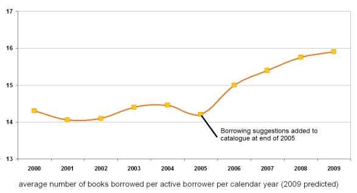

Service and system improvement
Understanding how services are being used is one of the first steps in improving the service that
can be offered to users. There are, of course, many ways which can be used to understand how
services are used and how users would like to see them improved. The most obvious are to ask
the users and service providers, and both of these are commonly done. However the use is then
being remembered and interpreted, so this can be supplemented by using activity data to
understand how users have actually behaved. The EVAD project was set up to increase
understanding of how the VLE is being used at Cambridge University with the aims of providing
senior stakeholders with better information on virtual learning environment usage and identifying
signatures that relate to skilled usage (both by staff and students) in order to help to spread good
practice both amongst staff in how to use it in their teaching and to students on how to use it in
their learning. The approach here is very different to that discussed in supporting student success
where the intention is to provide personal advice. Here the aim is to look at a higher level, looking
at patterns rather than individuals. The results of this can lead to improved promotion and
management of the VLE.
Similarly, the AGtivity project looked at using the activity data produced by the Access Grid
Advanced Video Conferencing nodes to help improve the both the use of nodes in order to make
more effective use of resources and to diagnose possible problems that may exist at any node.
For instance, a pattern of very short conferences may indicate that there is a problem connecting
to other centres. By improving the service as a result of using the activity data they also hope to
reduce the amount of travel that participants undertake thereby saving both costs and the amount
of CO2 produced.
Another way in which activity data can be used to directly support service improvement is through
the use of recommendation services to help users to discover resources that will be of most value
to them. This has already been discussed in terms of supporting student success.
The SALT
project set about offering users of the John Ryland's University Library at Manchester University
recommendations based on books that other people had used; but rather than simply offer the
most popular books that others had borrowed they set about offering relevant titles that had been
more rarely borrowed. This has the dual benefit of offering users resources that they would be
unlikely to find otherwise, and it ensures that the resources which might otherwise very rarely be
used are used more often. Work at the University of Huddersfield (pre-dating the LIDP) has shown
the impact the recommender services can have on the use of library resources.

In Wales there was concern that materials in the Welsh Repository Network (WRN) were not
being as widely used as they might be as the logs showed that most people were coming in from
a Google search, locating a paper and moving on elsewhere. They wished to increase the time
people spent in the repository once they had arrived and the number of papers that they looked at
with the intention of increasing the impact of research undertaken within the member universities.
Comments from the evaluation report included:
"It could encourage wider use than materials in our own repository - it has real value."
"It is good for a small University with only a small number of items in its repository as it can send users to other repositories to relevant items."
"[It] helps to expose things in smaller less well known collections."
"Allows you to discover items which may not be picked up at the top of the search results for the terms you have used."
Effective use of activity data can encourage use of services to support the core functions of the
institution by increasing the productivity of learners and researchers and empowering them to
make more effective use of a wide variety of services.
Referring to a related JISC funded project Martyn Harrow, director of information services at Cardiff
University, said: “The strength of the RAPTOR tool at a time when education budgets are being
squeezed is in providing the evidence needed for academic schools to assess the e- resources
subscriptions that are in place. Universities using this system will be able to prove the impact of
the e- resources they provide, and ensure that they continue to deliver the best possible value for
money for individual academic schools and entire institutions.
For further details see: